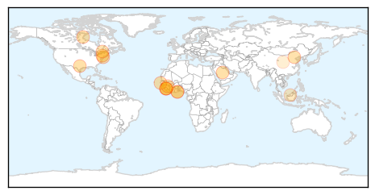
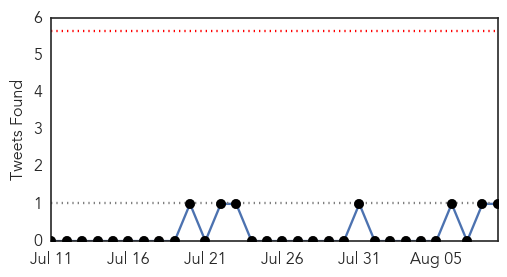

Ebola
30-Day Web Trend
1 alerts, 0 warnings

30-Day Twitter Trend
0 alerts, 0 warnings

Article Locations
Article Confidences

Top Articles:
- 1.000
- Progress on Ebola
- 1.000
- Saudi Arabia Man Contracts Ebola Virus
- 1.000
- Sierra Leone Now in State of Emergency
- 1.000
- Ebola on the run: News of a vaccine may be a game changer
- 0.998
- The Ebola Breakout Coincided With UN Vaccine Campaigns - By Yoichi Shimatsu/ Exclusive to Rense.com
- 0.996
- Thousands of Ebola survivors face severe pain, possible blindness
- 0.992
- Ebola nurse Amber Vinson discharged as Obama defends CDC’s Ebola rules
- 0.987
- China Will Build Liberia a Coastal Highway to Help its Recovery from the Ebola Outbreak
- 0.964
- China pledges 5 mln USD to support recovery
- 0.941
- Disease Continues To Spread In NYC As Officials Squabble
- 0.932
- Zonal Ebola response teams
- 0.927
- Ghana forms National/Zonal Ebola response teams
- 0.912
- Isabel Wallace: Let’s make sure the Ebola vaccine is not Canada’s last vaccine success story
- 0.757
- Chinese FM visits Ebola-affected countries
- 0.721
- Sierra Leone: State of Emergency still in place but no limit on public activities
- 0.512
- China to build highway for Liberia as part of Ebola recovery aid
Top Tweets:
- 0.858
- Isabel Wallace: Let's make sure the Ebola vaccine is not Canada's last vaccine ... - Ottawa Citizen http://t.co/VIJ9WRnknm ebola EVD
- 0.855
- Ghana forms National/Zonal Ebola response teams - GhanaWeb http://t.co/5Jaiz2JeYB ebola EVD
- 0.831
- Many Ebola survivors have joint pain, impaired eyesight - Columbus Dispatch http://t.co/LzGqMGymoG ebola EVD
- 0.823
- Ebola on the run: News of a vaccine may be a game changer - Pittsburgh Post-Gazette http://t.co/U2LYc0Lxpr ebola EVD
- 0.747
- Remembering The Fall Of One Of The World's Great Ebola Experts - NPR http://t.co/PuU0PIN47Y ebola EVD
- 0.736
- China to build highway for Liberia as part of Ebola recovery aid - Yahoo News http://t.co/8QZjwTqLa1 ebola EVD
Unknown
30-Day Web Trend
0 alerts, 0 warnings

30-Day Twitter Trend
0 alerts, 0 warnings

Article Locations
Article Confidences

Top Articles:
- 0.990
- Officials examine how Brunswick woman contracted Legionnaire’s disease — The Medina County Gazette
- 0.966
- Disease leaves child in serious condition
- 0.963
- Legionnaires’ Disease Kills 10 in NYC
- 0.959
- Health teams sent to test NYC for bacterial outbreak that's killed 10
- 0.942
- Confirmed Legionnaires’ death in Cleveland
- 0.938
- Health teams sent to test NYC for bacterial outbreak that's killed 10
- 0.938
- Health teams sent to test NYC for bacterial outbreak that's killed 10
- 0.936
- Child catches plague at Yosemite
- 0.927
- Record 108 contract Legionnaires disease in New York
- 0.918
- Officials Expand Efforts to End Legionnaires’ Disease Outbreak
- 0.917
- Chicago Tribune
- 0.915
- Ministry clears four people of bird flu virus
- 0.909
- Record 108 Contract Legionnaires Disease in New York
- 0.870
- New York Legionnaires Outbreak: 100 Sick, 10 Dead
- 0.869
- Ministry takes precautionary measures against new virusHealthcare
- 0.866
- CDC: Coordination could cut ‘superbug’ infections in half
- 0.864
- Breaking News for Calaveras County & Beyond!- The Pine Tree .net
- 0.851
- Child Contracts Plague After Camping At Yosemite National Park
- 0.840
- Legionnaires Case Reported in Rockland; Bronx Death Toll at...
- 0.831
- 10 casualties due to Legionnaires’ disease Outbreak in South Bronx
- 0.819
- NYC mayor says bacteria outbreak has been contained
- 0.818
- Georgia health officials confirm case of West Nile virus
- 0.808
- New York health officials respond to Legionnaire’s Outbreak
- 0.801
- Child contracts plague at Yosemite National Park: health department
- 0.794
- City Health Inspectors Continue To Investigate Legionnaires’ Outbreak « CBS New York
- 0.792
- Public Health Alert – “Biological Warfare Experiment on American Citizens Results in Spreading Pandemic!”
- 0.770
- Third case of meningococcal ruled out in Hunter New England region
- 0.770
- Flood aftermath: Man dies of diarrhoea, first death in Kolkata
- 0.768
- Cleveland hospital: Ohio woman dies of Legionnaires’ disease
- 0.693
- Legionnaire’s Disease Outbreak Now Under Control-- NYC Mayor De Blasio
- 0.682
- Understanding equine eye problem uveitis *H&H VIP*
- 0.677
- Protests in Syria after Assad’s cousin accused in road rage killing
- 0.677
- Spain ‘violates UK sovereignty’ after chasing drug smugglers onto Gibraltar beach
- 0.677
- Paris’ luxury hotels fear the rise of Airbnb
- 0.677
- Japan marks 70th anniversary of Nagasaki amid calls to abolish nuclear weapons
- 0.677
- Gunmen launch deadly attack on villagers in northern Mali
- 0.677
- Little-known Burgundy is world’s priciest wine at €14,254
- 0.677
- Israel arrests two more suspects linked to deadly arson attack
- 0.677
- Israeli army kills Palestinian suspected of stabbing civilian
- 0.677
- Haitians set to vote in long-overdue elections
- 0.677
- Gunfire erupts as Ferguson commemorates shooting of Michael Brown
- 0.655
- Another animal dies of anthrax in 2nd disease outbreak in NE Bulgaria (ROUNDUP)
- 0.651
- HPV programme to get PAHO support
- 0.634
- Child gets the plague, and squirrels and chipmunks could be to blame
- 0.606
- Rockland resident recovering from Legionnaire's disease
- 0.603
- Hand washing practices low among Indian doctors: Study
- 0.594
- De Blasio says Legionnaires' outbreak is contained
- 0.580
- City and State Health Inspectors Continue To Investigate Legionnaires’ Outbreak « CBS New York
- 0.558
- LYME DISEASE: Simple questions, difficult answers as controversy endures (photos)
- 0.555
- Riyadh hospital treats 8 injured from Asir
Showing top 50 articles...
Top Tweets:
- 0.759
- RT: Fin de la première journée de vote en Haiti : les législatives n'auront pas suscité forte participation citoyenne, incide…